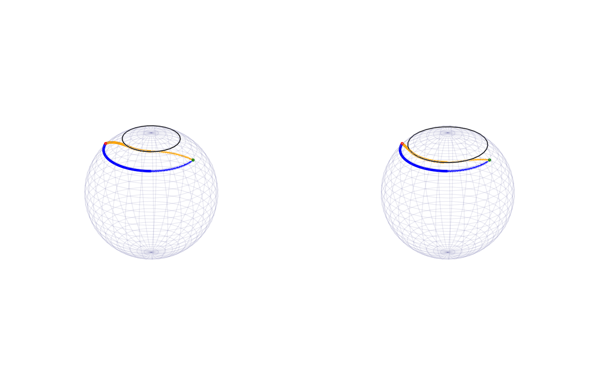

Elastic Geodesic on Sphere with Obstacle Avoidance
Laura Weigl, Ronny Bergmann, and Anton Schiela 2025-11-25
using LinearAlgebra, SparseArrays, OffsetArrays
using Manifolds, Manopt, ManoptExamples
using GLMakie, Makie, GeometryTypes, Colors, ColorSchemes, NamedColors
using CSV, DataFramesIntroduction
In this example we compute an elastic geodesic on the sphere avoiding an obstacle by applying Newton’s method on vector bundles which was introduced in [WBS25]. This example reproduces the results from the example in Section 6.2 therein.
We consider the sphere $\mathbb{S}^2$ equipped with the Riemannian metric $\langle \cdot, \cdot \rangle$ given by the Euclidean inner product with corresponding norm $\lVert\cdot\rVert$ and a time interval $I =[0,T]$.
Let $\mathcal X = H^1(I, \mathbb S^2)$ and $\mathcal E^* = T^*\mathcal X$ its cotangent bundle.
Consider the minimization problem
\[\min_{γ ∈ H^1(I, \mathbb S^2)} \; \frac12 \int_0^T \lVert\dot γ(t)\rVert^2 \; \mathrm{d}t\]
under the constraint that $γ_3(t) ≤ 1-h_{\mathrm{ref}} \; \text{ for all } t∈ [0,T]$ where $γ_3(t)$ denotes the third component of $γ(t)∈ \mathbb{S}^2$ and $h_{\mathrm{ref}} ∈ (0,1)$ is a given height. Additionally, we have to take into account that boundary conditions $γ(0) = γ_0$ and $γ(T) = γ_T$ for given $γ_0, γ_T ∈ \mathbb S^2$ are satisfied.
Using a penalty method, also known as Moreau-Yosida regularization, with a quadratic penalty term we can rewrite this as an unconstrained minimization problem with a penalty coefficient $p∈ \mathbb R$:
\[\min_{γ ∈ H^1(I, \mathbb S^2)} \; \underbrace{\frac12 \int_0^T \lVert\dot γ(t)\rVert^2 + p \max(0, γ_3(t) - 1 + h_{\mathrm{ref}})^2 \; \mathrm{d}t}_{=: f(γ)}\]
Let $m: \mathbb R → \mathbb R, \, m(x) := \max(0, x)$. The objective is differentiable function $f : \mathcal X → \mathbb R$ with derivative
\[f'(γ)δ γ = \int_0^T \langle \dotγ(t), \dot{δ γ}(t)\rangle + p \cdot m(γ_3(t) - 1 + h_{\mathrm{ref}})δ γ_3(t)\]
for $δ γ ∈ T_γ \mathcal X$. This mapping is semismooth and our goal is to find a critical point of $f$ by applying Newton’s method on $f'$.
This then yields an elastic geodesic avoiding the north pol cap and connecting $γ_0$ and $γ_T$.
For our example we set
N=200
S = Manifolds.Sphere(2)
power = PowerManifold(S, NestedPowerRepresentation(), N) # power manifold of S
mutable struct VariationalSpace
manifold::AbstractManifold
degree::Integer
end
test_space = VariationalSpace(S, 1)
start_interval = -pi/2 + 0.1
end_interval = pi/2 - 0.1
discrete_time = range(; start=start_interval, stop = end_interval, length=N+2) # equidistant discrete time points
θ = pi/4
y0 = [sin(θ)*cos(start_interval),sin(θ)*sin(start_interval),cos(θ)] # startpoint of geodesic
yT = [sin(θ)*cos(end_interval),sin(θ)*sin(end_interval),cos(θ)] # endpoint of geodesic3-element Vector{Float64}:
0.07059288589999425
0.7035741925769522
0.7071067811865476In order to apply Newton’s method to find a zero of $f'$, we need the linear mapping $Q_{f'(γ)}^*\circ f''(γ)$ (cf. [WBS25]). Since the sphere is an embedded submanifold of $\mathbb R^3$, we can use the formula
\[Q_{f'(γ)}^*\circ f''(γ)δ γ\,\phi = f'(γ)(\overset{→}{V_γ}'(γ)δ γ\,\phi) + f''_{\mathbb R^3}(γ)δ γ\,\phi\]
for $δ γ, \, \phi ∈ T_γ \mathcal X$, where $\overset{→}{V}_γ(\hat γ) ∈ L(T_γ \mathcal X, T_{\hat{γ}}\mathcal X)$ is a vector transport and
\[f_{\mathbb R^3}''(γ)δ γ\, \phi = \int_0^T \langle \dot{δ γ}(t), \dot{\phi}(t)\rangle + p \cdot m'(γ_3(t) - 1 + h_{\mathrm{ref}})\phi_{3}(t) δ γ_{3}(t)\]
is an (euclidean) Newton-derivative of f’.
We define a structure that has to be filled for two purposes:
- Definition of an integrands and their derivatives
- Definition of a vector transport and its derivative
mutable struct DifferentiableMapping{F1<:Function,F2<:Function,T}
value::F1
derivative::F2
scaling_penalty::T
h_ref::T
end;The following routines define a vector transport and its euclidean derivative. As seen above, they are needed to derive $Q_{f'(γ)}^*\circ f''(γ)$.
As a vector transport we use the (pointwise) orthogonal projection onto the tangent spaces, i.e. for $p, q ∈ \mathbb S^2$ and $X ∈ T_p\mathbb S^2$ we set
\[\overset{→}{V}_{p}(q)X = (I-q\cdot q^T)X ∈ T_q\mathbb S^2.\]
The derivative of the vector transport is then given by
\[\left(\frac{d}{dq}\overset{→}{V}_{p}(q)\big\vert_{q=p}δ q\right)X = \left( - δ q\cdot p^T - p\cdot δ q^T\right)\cdot X.\]
transport_by_proj(S, p, X, q) = X - q*(q'*X)
transport_by_proj_prime(S, p, X, dq) = (- dq*p' - p*dq')*X
transport = DifferentiableMapping(transport_by_proj,transport_by_proj_prime,nothing,nothing)DifferentiableMapping{typeof(transport_by_proj), typeof(transport_by_proj_prime), Nothing}(transport_by_proj, transport_by_proj_prime, nothing, nothing)The following two routines define the integrand of $f'$ and the euclidean second derivative $f''_{\mathbb R^3}$. Here, a Newton-derivative of the maximum function given by
\[m'(x):= \begin{cases} 0 &: \; x<0 \\ \text{arbitrary} &: \; x= 0\\ 1 &: \; x>0 \end{cases}\]
is used. A scaling parameter for the penalty parameter is also employed.
function f_prime_at(Integrand, y, ydot, B, Bdot)
return ydot'*Bdot + Integrand.scaling_penalty * max(0.0, y[3] - 1.0 + Integrand.h_ref)*B[3]
end
function max_prime(y, h_ref)
if y[3] < 1.0 - h_ref
return 0.0
else
return 1.0
end
end
function f_second_at(Integrand,y,ydot,B1,B1dot,B2,B2dot)
return B1dot'*B2dot + Integrand.scaling_penalty*max_prime(y, Integrand.h_ref)*B1[3]*B2[3]
end
integrand = DifferentiableMapping(f_prime_at,f_second_at,1.0,0.1)DifferentiableMapping{typeof(f_prime_at), typeof(f_second_at), Float64}(f_prime_at, f_second_at, 1.0, 0.1)Newton Equation
In this example we implement a functor to compute the Newton matrix and the right hand side for the Newton equation
\[Q^*_{f''(γ)}\circ f''(γ)δ γ + f'(γ) = 0^*_γ\]
by using the assembler provided in ManoptExamples.jl.
It returns the matrix and the right hand side in base representation.
The assembly routines need a function for evaluation the iterates at the left and right quadrature point.
evaluate(p, i, tloc) = (1.0-tloc)*p[i-1]+tloc*p[i];
struct NewtonEquation{F, TS, T, I, NM, Nrhs}
integrand::F
test_space::TS
transport::T
time_interval::I
A::NM
b::Nrhs
end
function NewtonEquation(M, F, test_space, VT, interval)
n = manifold_dimension(M)
A = spzeros(n,n)
b = zeros(n)
return NewtonEquation{typeof(F), typeof(test_space), typeof(VT), typeof(interval), typeof(A), typeof(b)}(F, test_space, VT, interval, A, b)
end
function (ne::NewtonEquation)(M, VB, p)
n = manifold_dimension(M)
ne.A .= spzeros(n,n)
ne.b .= zeros(n)
Op = OffsetArray([y0, p..., yT], 0:(length(p)+1))
ManoptExamples.get_jacobian!(M, Op, evaluate, ne.A, ne.integrand, ne.transport, ne.time_interval; test_space=ne.test_space)
ManoptExamples.get_right_hand_side!(M, Op, evaluate, ne.b, ne.integrand, ne.time_interval; test_space=ne.test_space)
endWe compute the Newton direction $δ γ$ by solving the linear system given by the base representation of the Newton equation directly and return the Newton direction in vector representation:
function solve_in_basis_repr(problem, newtonstate)
X_base = (problem.newton_equation.A) \ (-problem.newton_equation.b)
return get_vector(problem.manifold, newtonstate.p, X_base, DefaultOrthogonalBasis())
end;For the computation of a solution of the penalized problem we use a simple path-following method increasing the penalty parameter by a factor 1.2 in each iteration. For the first iteration we use a curve along the latitude connecting $γ_0$ and $γ_T$:
y(t) = [sin(θ)*cos(t), sin(θ)*sin(t), cos(θ)]
discretized_y = [y(ti) for ti in discrete_time[2:end-1]];We compute the resulting elastic geodesic for $h_{\mathrm{ref}} = 0.1$ and $h_{\mathrm{ref}} = 0.2$.
h_refs = [0.1, 0.2]
y_star = copy(power, discretized_y)
res = []
for h_ref in h_refs
integrand.scaling_penalty = 5.0
integrand.h_ref = h_ref
NE = NewtonEquation(power, integrand, test_space, transport, discrete_time)
st_res = vectorbundle_newton(power, TangentBundle(power), NE, y_star; sub_problem=solve_in_basis_repr, sub_state=AllocatingEvaluation(),
stopping_criterion=(StopAfterIteration(150)|StopWhenChangeLess(power,1e-13; outer_norm=Inf)),
retraction_method=ProjectionRetraction(),
debug = [:Iteration, (:Change, "Change: %1.8e"), "\n", :Stop],
return_state=true)
y_star = copy(power, get_solver_result(st_res))
for i in range(1,50)
integrand.scaling_penalty *= 1.2
NE = NewtonEquation(power, integrand, test_space, transport, discrete_time)
(i > 1) && print(".")
st_res = vectorbundle_newton(power, TangentBundle(power), NE, y_star; sub_problem=solve_in_basis_repr, sub_state=AllocatingEvaluation(),
stopping_criterion=(StopAfterIteration(150)|StopWhenChangeLess(power,1e-13; outer_norm=Inf)),
retraction_method=ProjectionRetraction(),
debug = ((i > 1) ? [] : [:Iteration, (:Change, "Change: %1.8e"), "\n", :Stop]),
return_state=true
)
y_star = copy(power, get_solver_result(st_res));
end
println("")
push!(res, y_star)
endInitial
# 1 Change: 7.33716599e+00
# 2 Change: 1.09269188e+00
# 3 Change: 1.57343110e-02
# 4 Change: 3.48909794e-05
# 5 Change: 1.51861742e-10
# 6 Change: 5.26159425e-15
At iteration 6 the algorithm performed a step with a change (5.338891568193822e-16) less than 1.0e-13.
Initial
# 1 Change: 1.36854874e-01
# 2 Change: 2.85972773e-03
# 3 Change: 1.48331704e-06
# 4 Change: 3.99564289e-13
At iteration 4 the algorithm performed a step with a change (4.1765954767618633e-14) less than 1.0e-13.
.................................................
Initial
# 1 Change: 7.94587041e-01
# 2 Change: 2.06153348e-01
# 3 Change: 1.21842504e-02
# 4 Change: 4.06216523e-05
# 5 Change: 4.49374037e-10
# 6 Change: 1.69919912e-14
At iteration 6 the algorithm performed a step with a change (1.869333381474851e-15) less than 1.0e-13.
Initial
# 1 Change: 5.25153574e-01
# 2 Change: 6.87239776e-02
# 3 Change: 1.33983224e-03
# 4 Change: 5.07882458e-07
# 5 Change: 7.72342326e-14
At iteration 5 the algorithm performed a step with a change (7.982032576245276e-15) less than 1.0e-13.
.................................................This yields the elastic geodesics shown below avoiding the north pole cap ($h_{\mathrm{ref}}=0.1$ (left), $h_{\mathrm{ref}}=0.2$ (right)) and connecting two points $γ_0$ and $γ_T$ (orange). The curve along the latitude connecting the two points (used as initial curve for the first iteration) is plotted as well (blue).
n = 30
u = range(0,stop=2*π,length=n);
v = range(0,stop=π,length=n);
sx = [cos(ui) * sin(vj) for ui in u, vj in v]
sy = [sin(ui) * sin(vj) for ui in u, vj in v]
sz = [cos(vj) for ui in u, vj in v]
π1(x) = 1.01*x[1]
π2(x) = 1.01*x[2]
π3(x) = 1.01*x[3]
geodesic_start = [y0, discretized_y ...,yT]
fig = Figure(resolution = (1400, 900), padding=0)
ax1 = Axis3(fig[1, 1]; aspect =:data)
hidedecorations!(ax1)
hidespines!(ax1)
ax2 = Axis3(fig[1, 2]; aspect =:data)
hidedecorations!(ax2)
hidespines!(ax2)
ax = [ax1, ax2]
for i in 1:length(ax)
x = acos(1-h_refs[i])
circx = [cos(ui)*sin(x) for ui in u]
circy = [sin(ui)*sin(x) for ui in u]
circz = fill(cos(x), n)
wireframe!(ax[i], sx, sy, sz, color = RGBA(0.5,0.5,0.7,0.1); transparency=true)
scatterlines!(ax[i], circx, circy, circz; markersize =2, color=:black, linewidth=2)
scatterlines!(ax[i], π1.(res[i]), π2.(res[i]), π3.(res[i]); markersize =8, color=:orange, linewidth=2)
scatterlines!(ax[i], π1.(geodesic_start), π2.(geodesic_start), π3.(geodesic_start); markersize =8, color=:blue, linewidth=2)
scatter!(ax[i], π1.([y0]), π2.([y0]), π3.([y0]); markersize = 10, color=:green)
scatter!(ax[i], π1.([yT]), π2.([yT]), π3.([yT]); markersize = 10, color=:red)
ax[i].azimuth[] += 14.445
ax[i].elevation[] = 35.02
limits!(ax[i], -1.5, 1.5, -1.5, 1.5, -1.5, 1.5)
end
fig┌ Warning: Found `resolution` in the theme when creating a `Scene`. The `resolution` keyword for `Scene`s and `Figure`s has been deprecated. Use `Figure(; size = ...` or `Scene(; size = ...)` instead, which better reflects that this is a unitless size and not a pixel resolution. The key could also come from `set_theme!` calls or related theming functions.
└ @ Makie ~/.julia/packages/Makie/TOy8O/src/scenes.jl:264
Technical details
This tutorial is cached. It was last run on the following package versions.
Status `~/Repositories/Julia/ManoptExamples.jl/examples/Project.toml`
[6e4b80f9] BenchmarkTools v1.6.3
[336ed68f] CSV v0.10.15
⌃ [13f3f980] CairoMakie v0.15.7
[0ca39b1e] Chairmarks v1.3.1
[35d6a980] ColorSchemes v3.31.0
[5ae59095] Colors v0.13.1
[a93c6f00] DataFrames v1.8.1
[31c24e10] Distributions v0.25.122
⌃ [e9467ef8] GLMakie v0.13.7
[4d00f742] GeometryTypes v0.8.5
[7073ff75] IJulia v1.33.0
[682c06a0] JSON v1.3.0
[8ac3fa9e] LRUCache v1.6.2
[b964fa9f] LaTeXStrings v1.4.0
⌃ [d3d80556] LineSearches v7.4.1
⌅ [ee78f7c6] Makie v0.24.7
[af67fdf4] ManifoldDiff v0.4.5
⌃ [1cead3c2] Manifolds v0.11.6
⌃ [3362f125] ManifoldsBase v2.2.1
⌃ [0fc0a36d] Manopt v0.5.28
[5b8d5e80] ManoptExamples v0.1.17 `..`
[51fcb6bd] NamedColors v0.2.3
[6fe1bfb0] OffsetArrays v1.17.0
[91a5bcdd] Plots v1.41.2
[08abe8d2] PrettyTables v3.1.2
[6099a3de] PythonCall v0.9.30
[f468eda6] QuadraticModels v0.9.14
[731186ca] RecursiveArrayTools v3.39.0
[1e40b3f8] RipQP v0.7.0
Info Packages marked with ⌃ and ⌅ have new versions available. Those with ⌃ may be upgradable, but those with ⌅ are restricted by compatibility constraints from upgrading. To see why use `status --outdated`This tutorial was last rendered December 14, 2025, 11:22:40.
Literature
- [WBS25]
- L. Weigl, R. Bergmann and A. Schiela. Newton's method into vector bundles Part II: : Application to Variational Problems on Manifolds, arXiv Preprint (2025).